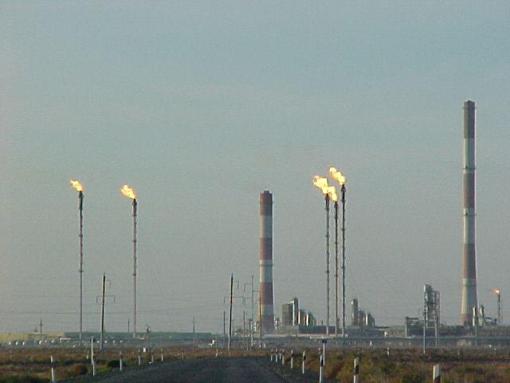

Ojeda

Ojeda is an oil and gas processing plant located 32km (20 mi) northeast of San Fernando, Mexico. The facility is 19 km (12 mi) wide and 21 km (13 mi) long. Constructed in 1989, Ojeda is one of the largest crude oil and gas processing plant facilities in Mexico. The city of San Fernando is the main transport hub of Ojeda oil from the Gulf of Mexico Sigsbee Field to inner-lying cities within the country.